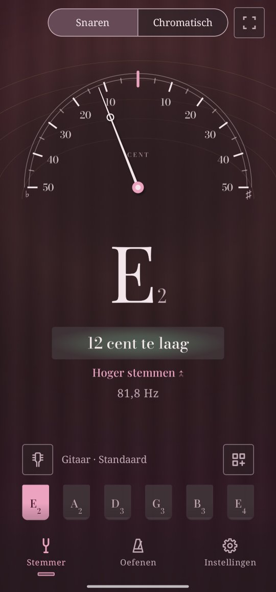

De stemmer
Speel één snaar. Twangle toont de noot, en de meter laat zien hoe ver die van zuiver zit.
Een snaar stemmen
- Tik op de kop-knop boven de snaren en kies je instrument en stemming, bijvoorbeeld Gitaar · Standaard.
- Speel één snaar en laat hem doorklinken.
- Draai aan de stemknop zoals Twangle zegt, Hoger stemmen of Lager stemmen, tot de naald in het midden staat en de noot zuiver toont.
Twangle vindt zelf welke snaar je speelt. Wil je bij één snaar blijven, tik er dan op: Twangle zegt dan Speel de A2-snaar en luistert alleen naar die. Tik er nog eens op om Twangle weer zelf te laten kiezen.
Hoe ver ernaast: cents
Een cent is een honderdste van een halve toon, de stap van de ene fret naar de volgende. Onder de noot laat Twangle zien hoeveel cent die ernaast zit, bijvoorbeeld 12 cent te laag of 8 cent te hoog.
Een noot telt als zuiver binnen 5 cent. Wil je het strenger, zet dan Instellingen → Marge voor zuiver op Precies: binnen 2 cent. In Instellingen kun je de telefoon ook kort laten trillen als een noot zuiver is, of onder de noot een bewegende golf tonen in plaats van de getallen.
Snaren of chromatisch
De schakelaar bovenaan kiest hoe Twangle luistert. Snaren vergelijkt wat je speelt met de snaren van je stemming, en toont ze onderaan. Chromatisch benoemt elke noot, voor een instrument dat Twangle niet kent, of voor je stem.
Je stemming
Het paneel instrument en stemming toont de gangbare stemmingen van elk instrument: voor de gitaar Standaard, Drop D, DADGAD, open stemmingen en meer. Met Lager met, onderaan het paneel, zet je elke stemming tot 2½ toon lager. Met Nieuwe stemming, aan het eind van de lijst, maak je een eigen stemming.
Op het gehoor stemmen
Houd de knop van een snaar vast om de noot te horen, met de klank van je eigen instrument: een getokkelde snaar voor de gitaar, een gestreken snaar voor de viool. Hij klinkt ongeveer vier seconden; tik op een snaar om hem eerder te stoppen. Met de volumeknoppen van de telefoon zet je hem harder of zachter. Zolang de toon klinkt, luistert de stemmer niet, dus hij stemt nooit op zichzelf.
Samen spelen
De meeste muziek stemt de A boven de middelste C, A4, op 440 Hz. Orkesten stemmen vaak op 442 Hz, barokensembles op 415 Hz. Je stelt het in bij Instellingen → Stemtoon (A4), van 415 tot 466 Hz. Alles volgt die stemtoon: de stemmer, de referentietonen en de andere functies.
Als hij je niet goed hoort
Dan zegt de stemmer dat onder de noot: Speel wat harder, Te veel lawaai hier of Te hard, leg de telefoon verder weg. Houd de telefoon bij je instrument, weg van ander geluid, en laat de snaar doorklinken in plaats van hem steeds opnieuw aan te slaan.
Voor wie het wil weten: hoe Twangle een noot hoort
Een getokkelde snaar herhaalt vele keren per seconde dezelfde golf. Ongeveer 47 keer per seconde neemt Twangle het nieuwste geluid van de microfoon (de laatste 85 milliseconden, twee keer zo lang voor lage snaren zoals die van een bas) en zoekt hoe lang het duurt voordat de golf zich herhaalt, met de YIN-methode van Alain de Cheveigné en Hideki Kawahara (2002). Die tijd geeft de frequentie, en de frequentie geeft de noot en hoeveel cent die ernaast zit. Twangles eigen tests houden dat binnen één cent op testtonen.
Een nieuwe noot verschijnt pas als een paar metingen het eens zijn, en de naald wordt afgevlakt zodat hij niet trilt, zonder achter je stemknop aan te lopen.
Voor wie het wil weten: waarom Twangle de onbewerkte microfoon vraagt
Voor bellen en video poetst een telefoon het geluid van de microfoon op: hij trekt het volume gelijk en haalt weg wat hij voor ruis houdt. Dat poetsen verandert de golf van een noot, zodat de toonhoogte verkeerd kan uitkomen en een uitstervende noot kan verdwijnen. Twangle vraagt Android om het onbewerkte geluid van de microfoon, of, op telefoons die dat niet bieden, het geluid voor spraakherkenning met het poetsen uit.
Het geluid wordt alleen geanalyseerd, zolang de stemmer op het scherm staat. Het wordt nooit opgenomen, bewaard of verstuurd: Twangle heeft geen toestemming om internet te gebruiken.
